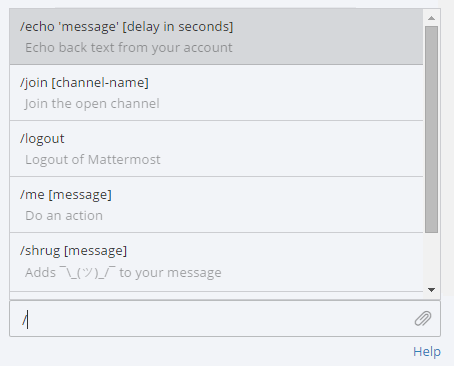

Executing Commands¶
Slash commands perform operations in Mattermost by typing into the text input box. Enter a / followed by a command and some arguments to perform actions.
Built-in slash commands come with all Mattermost installations and custom slash commands are configurable to interact with external applications. Learn about configuring custom slash commands on the developer slash command documentation page.
Built-in Commands¶
The following slash commands are available on all Mattermost installations:
| Command | Description | Example |
|---|---|---|
| /away | Set your status to away | /away |
| /collapse | Turn on auto-collapsing of image previews | /collapse |
| /echo {message} {delay in seconds} | Echo back text from your account | /echo Hello World 5 |
| /expand | Turn off auto-collapsing of image previews | /expand |
| /header {text} | Edit the channel header | /header File bugs here |
| /help | Open the Mattermost help page | /help |
| /invite_people {email address} | Send an email invite to your Mattermost team | /invite_people john@example.com |
| /join {channel name} | Join the open channel | /join off-topic |
| /logout | Log out of Mattermost | /logout |
| /me | Do an action | /me Hello World |
| /msg {@username} {message} | Send a Direct Message to a user | /msg @alice hello |
| /offline | Set your status to offline | /offline |
| /online | Set your status to online | /online |
| /open {channel name} | Join the open channel | /open off-topic |
| /search {text} | Search text in messages | /search meeting |
| /settings | Open the Account Settings dialog | /settings |
| /shortcuts | Display a list of keyboard shortcuts | shortcuts |
| /shrug {message} | Add ¯\_(ツ)_/¯ to your message |
/shrug oh well |
Begin by typing / and a list of slash command options appears above the text input box. The autocomplete suggestions help by providing a format example in black text and a short description of the slash command in grey text.
Custom Commands¶
Custom slash commands integrate with external applications. For example, a team might configure a custom slash command to check internal health records with /patient joe smith or check the weekly weather forecast in a city with /weather toronto week. Check with your System Admin or open the autocomplete list by typing / to determine if your team configured any custom slash commands.
Custom slash commands are disabled by default and can be enabled by the System Admin in the System Console > Integrations > Webhooks and Commands. Learn about configuring custom slash commands on the developer slash command documentation page.